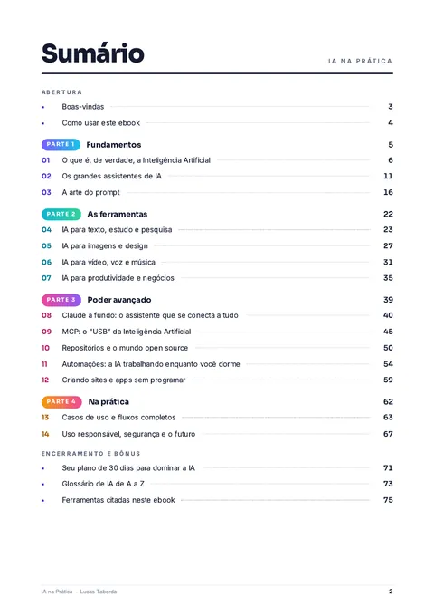
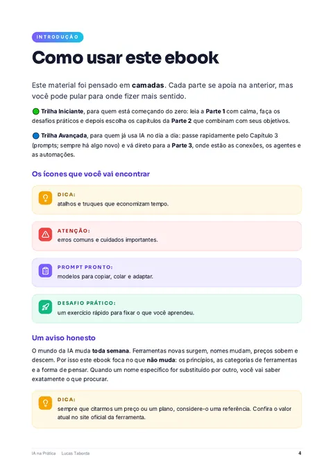
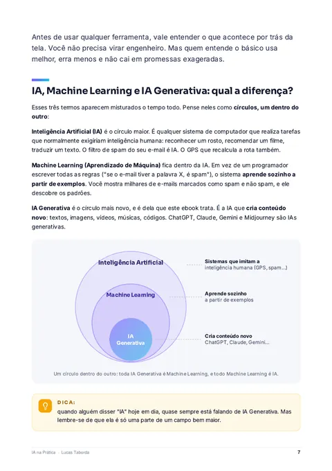
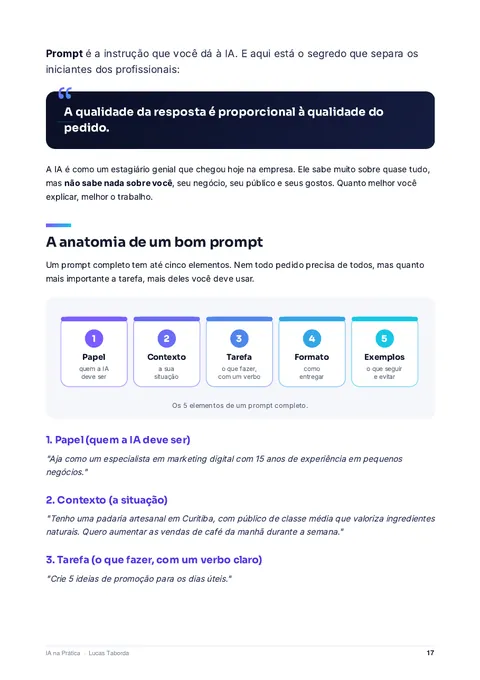
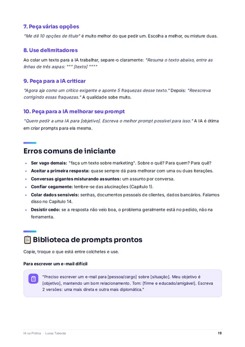
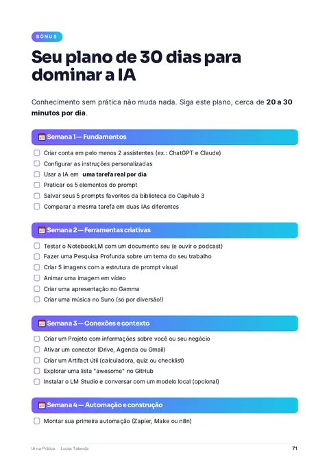

Respostas genéricas
Pedido vago, resposta que serviria para qualquer pessoa. Quase sempre o problema está no pedido, não na ferramenta.
IA na Prática leva você do primeiro prompt às automações que rodam sozinhas: assistentes, imagens, vídeo, Claude, MCP, sites sem programar e um plano de 30 dias para dominar tudo.
Ebook digital em PDF · por Lucas Taborda
Ferramentas que você vai aprender a usar
Fica de fora quase todo o potencial da IA. E o que separa quem tira resultado de quem só experimenta não é sorte: é saber pedir, escolher e conectar.
Pedido vago, resposta que serviria para qualquer pessoa. Quase sempre o problema está no pedido, não na ferramenta.
Surge uma IA nova toda semana. Sem saber qual usar para cada tarefa, você perde tempo testando em vez de produzir.
E-mails, planilhas, resumos, posts, propostas. Tudo no manual, enquanto a IA poderia fazer por você, até enquanto você dorme.
Quem aprende IA de verdade agora passa a competir com quem ainda não sabe usá-la.
Uma vantagem enorme no mercado de trabalho, nos negócios e na criação de conteúdo. É exatamente isso que o ebook entrega, passo a passo.Sem jargão, para saber quando confiar nela e quando desconfiar, incluindo alucinações e limites.
ChatGPT, Claude, Gemini e outros: qual usar em cada tarefa.
Resultados profissionais, com biblioteca pronta para copiar.
Imagens, vídeos, vozes, músicas e apresentações com as melhores ferramentas.
Conectores e MCP para ligar a IA às suas ferramentas e multiplicar o que ela consegue fazer.
Sem saber programar.
Para que as tarefas trabalhem por você 24 horas por dia.
Protegendo seus dados e sua reputação.
Cada parte se apoia na anterior, mas você pode pular direto para o que faz mais sentido. Os números ao lado de cada capítulo indicam a página inicial.
IA, Machine Learning e IA Generativa, como o modelo "pensa" e onde ela erra.
ChatGPT, Claude, Gemini, Copilot e Perplexity, com tabela comparativa e quando vale assinar.
Os 5 elementos de um bom prompt, 10 técnicas e uma biblioteca de prompts prontos.
Pesquisa com fontes, NotebookLM, escrita, revisão, resumo e tradução.
Principais geradores de imagem e como escrever prompts visuais.
Geração de vídeo, avatares, voz e dublagem, música e cortes automáticos.
Apresentações em minutos, reuniões resumidas, atendimento, vendas e marketing.
Projetos, Artifacts, Skills, conectores e Claude Code.
Como funciona, exemplos práticos e como instalar com segurança.
GitHub, Hugging Face e como rodar IA no seu próprio computador.
Gatilhos e ações, 5 automações prontas para montar e agentes de IA.
Plataformas de "vibe coding" e do zero ao site publicado, passo a passo.
Kits de IA para criador de conteúdo, empreendedor, profissional e estudante.
Privacidade, golpes com IA, direitos autorais e como checar informações.
Design limpo, caixas de dica, desafios práticos e prompts prontos. Deslize para ver algumas páginas.






Um gostinho da biblioteca do Capítulo 3. Troque o que está entre colchetes e cole no assistente de IA que você usa.
"Aja como [especialista]. Contexto: [situação detalhada]. Tarefa: [o que fazer]. Público: [para quem]. Formato: [como entregar]. Restrições: [o que evitar]. Antes de começar, faça as perguntas necessárias para entregar um resultado excelente."
"Quero aprender [assunto] do zero. Crie um plano de estudos de [X] semanas, com 30 minutos por dia. Para cada semana: objetivo, conceitos-chave, um exercício prático e um recurso gratuito para aprofundar."
"Preciso escrever um e-mail para [pessoa/cargo] sobre [situação]. Meu objetivo é [objetivo], mantendo um bom relacionamento. Tom: [firme e educado/amigável]. Escreva 2 versões: uma mais direta e outra mais diplomática."
Esses são 3 dos 10 prompts da biblioteca. O ebook também ensina por que eles funcionam, para você criar os seus.
O material foi pensado em camadas. Você escolhe a trilha e pula para onde fizer mais sentido.
Leia a Parte 1 com calma, faça os desafios práticos e depois escolha os capítulos da Parte 2 que combinam com seus objetivos.
Passe rápido pelo Capítulo 3 (sempre há algo novo em prompts) e vá direto à Parte 3, onde estão as conexões, os agentes e as automações.
Fluxo da ideia à publicação: uma gravação vira uma semana inteira de conteúdo.
Fazer muito com pouca equipe: atendimento, propostas, marketing e gestão com IA.
Aprender mais rápido, produzir melhor e se destacar no trabalho e na carreira.
Cerca de 20 a 30 minutos por dia. Em quatro semanas você sai da leitura para a prática.
Um guia direto, em português, para quem quer parar de apenas testar a IA e começar a ter resultado com ela. Ferramentas vão mudar; quem sabe pensar com clareza e pedir bem domina qualquer IA que surgir.
Pagamento feito na página segura da plataforma de checkout. Compras online no Brasil contam com o direito de arrependimento de 7 dias (Código de Defesa do Consumidor, art. 49).
Não. O ebook foi escrito em camadas: a Trilha Iniciante começa do zero, sem jargão. Até o capítulo sobre criar sites e aplicativos mostra como fazer isso sem programar.
Sim. A Parte 1 explica como a IA funciona, apresenta os principais assistentes e ensina a escrever bons prompts. Quem já usa IA pode seguir a Trilha Avançada e ir direto para conexões, MCP e automações.
Em PDF, que você lê no celular, tablet ou computador. A liberação do acesso é feita pela plataforma de pagamento após a compra.
O mundo da IA muda toda semana, por isso o ebook foca no que não muda: os princípios, as categorias de ferramentas e a forma de pensar. Quando um nome específico for substituído, você saberá exatamente o que procurar. Valores citados são referência; confira o preço atual no site oficial da ferramenta.
Compras feitas pela internet no Brasil contam com o direito de arrependimento de 7 dias previsto no Código de Defesa do Consumidor (art. 49). Confira as condições na página de pagamento.
Sim. O Capítulo 14 trata de privacidade (o que nunca colar numa IA), golpes com IA, direitos autorais e como checar informações.
Do primeiro prompt às automações, em um único guia prático, em português.
Quero o IA na Prática